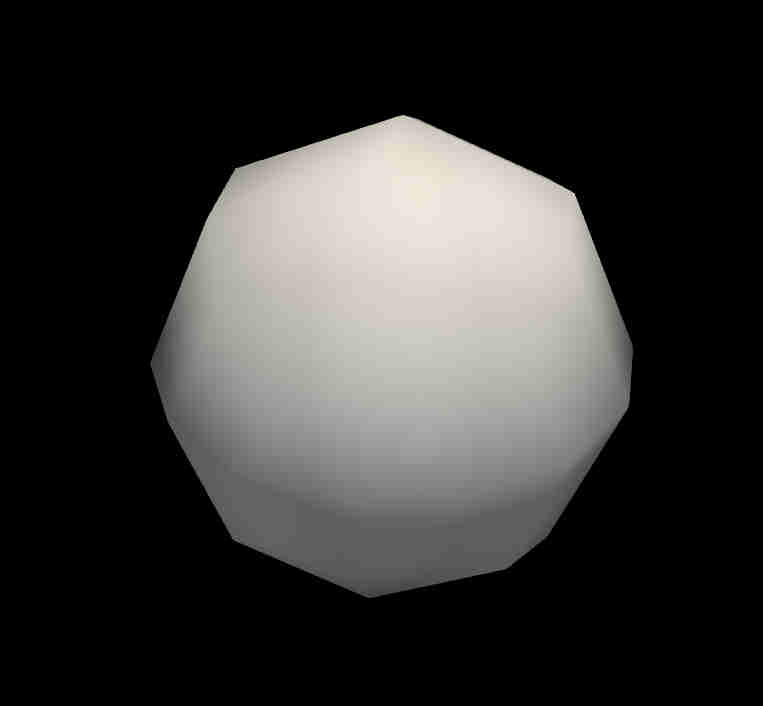

1 / 2

Before Filter
2 / 2

Filter Result
This is the documentation for the elevation filter plugin example. Below are images of what are implemented in this plugin.
To see the carousel containing images of this plugin you can activate `PARAVIEW_USE_WEBENGINE` in CMake.